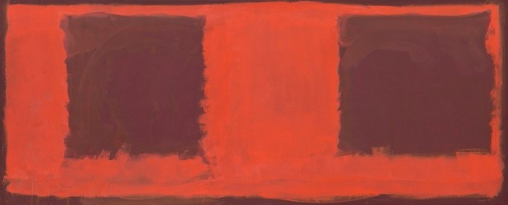

Mark Rothko: A Retrospective
September 20, 2015–January 24, 2016
Experience one of the 20th century's most iconic artists. The MFAH is the sole U.S. venue to present Mark Rothko: A Retrospective, featuring more than 60 paintings that trace the development of Rothko's signature syle. Discover the humanism and beauty of each painting and see how Rothko became one of the foremost figures of the Abstract Expressionist movement.
Details and Programs: mfah.org/rothko
The exhibition is organized by the National Gallery of Art, Washington and the Museum of Fine Arts, Houston. This exhibition is supported by an indemnity from the Federal Council on the Arts and the Humanities.
Lead corporate sponsor:
Generous funding is provided by Sotheby's; Norton Rose Fulbright; Oliver Wyman; the Robert Lehman Foundation; and Mr and Mrs. Rodney Margolis.
Official Media Partner: 
Mark Rothko, Untitled (Seagram Mural Sketch), 1959. National Gallery of Art, Washington. Copyright 1998 by Kate Rothko Prizel and Christopher Rothko